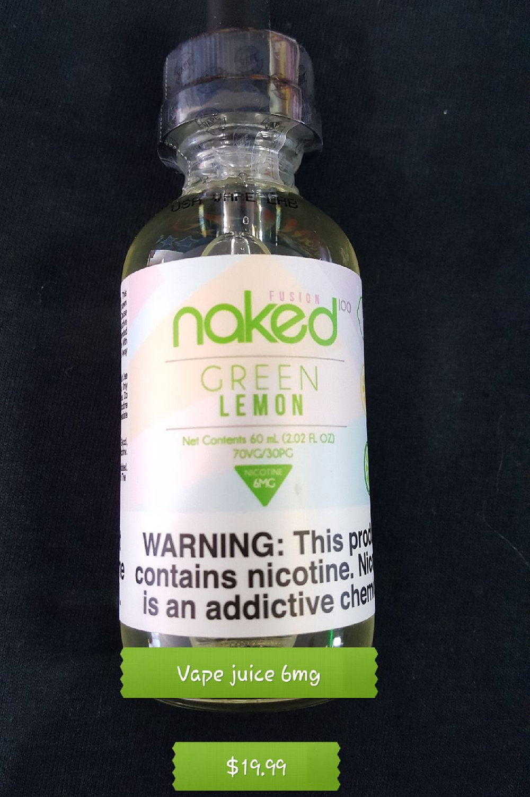

Detox / Cleanses
DETOXIFY GREEN CLEAN
You can enjoy a healthier, cleaner body with Detoxify Green Clean. Green Clean is the herbal cleansing detox drink concentrate used by people just like you. They cleansed their systems of toxins and impurities with Green Clean, and so can you. PRODUCT INFO Detoxify Green Clean is the way to help lower the impurities your body absorbs every day. Pick your day for using your Green Clean for intensive cleansing. Begin your cleansing program with Green Clean. Shake the Green Clean Cleansing Blend well and drink entire contents of the bottle. Next, shake Green Clean Green Tea Metaboost well and drink entire contents of bottle. It is permissible to mix both Green Clean bottles with up to 16oz of water. Wait 15 minutes. Drink 32oz of water. Continue to drink plenty of water throughout the day to extend your cleansing program for hours. Urinate frequently. Frequent urination indicates that you are experiencing optimal cleansing with Green Clean. ADDITIONAL INFORMATION Green Clean is intended for periodic intensive cleansing that is a part of an ongoing cleansing routine. For best results, use Detoxify’s PreCleansing products for 2 days prior to using Green Clean. For optimal cleansing and health, take Detoxify Constant Cleanse every day with six 16oz glasses of water. Eat light meals, including fruits, vegetables, and fiber during your cleansing program. PREGNANT OR BREASTFEEDING WOMEN SHOULD CONSULT THEIR PHYSICIAN BEFORE USING THIS PRODUCT. Green Clean is not intended for children. DOES GREEN CLEAN WORK? With its powerful ingredients, Detoxify Green Clean is the most powerful...
Ask about this product Home